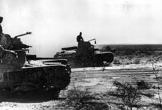
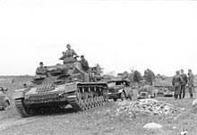

The Most influential Battles of World War 2
World war was the most deadly war in the history of the world.
With deaths estimated to be around 50-85 million, and thousands and thousands of battles.
But of all of those battles there are three that stand out, as the most deadly and influential battle that happened in World War 2>,

Wavell's first Libyan offensive was a successful British counterattack initiated on December 9, 1940. The battle was led by General Sir Archibald Wavell. The battle resulted in Italian defeat at Tobruk in eastern Libya on January 22, 1941.

The battle of Smolensk was one of the most bitter battles of World War 2, lasting for 3 months from July to September 1941. The battle helped prevent the Germans from advancing to Moscow before the winter set in.

And finally, The Invasion of Sicily in 1943. The conquest of Sicily took a little more than a month and it led directly to the fall of the leader of Italy, Dictator Benito Mussolini.
All of these battles had a large and important impact on the war, and they all contributed to the victory of the allies, and the downfall of their enemies.
| Important People | Home Page | Important Countries | Timeline |
|---|---|---|---|
| Click Here | Click Here | Click Here | Click Here |